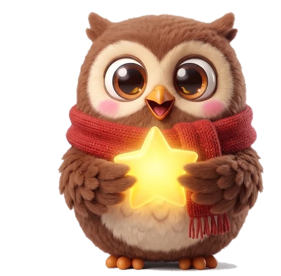

Подтвердите — и она получит звёздочки.

 Топоух
ТопоухЗдесь видно, что Алиса рассказала Ух. Всё хранится только в этом браузере.
Каникулы 2026/27 уже внесены: 1–8 ноября, 25 декабря – 10 января, 15–21 февраля, 21–28 марта, лето с 1 июня.
Всё хранится в браузере этого устройства. На iPhone и iPad Safari стирает данные сайта, если его не открывать 7 дней, — поэтому добавьте сайт на экран «Домой»: «Поделиться» → «На экран „Домой“» и открывайте оттуда. И время от времени сохраняйте копию.
Фото станет аватаром в углу. Оно хранится только в этом браузере и никуда не отправляется.
Ух, Топа и английские слова говорят живыми записанными голосами. Настройки ниже — запасной голос устройства для фраз, которых нет в записи (например, с темой урока).
После ошибки Ух объясняет правило и сразу даёт похожее слово. Здесь — какие правила путаются чаще.